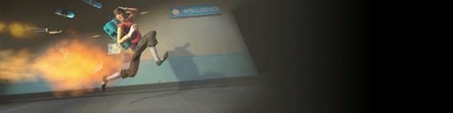
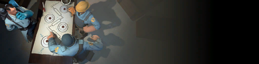
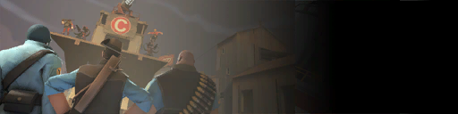
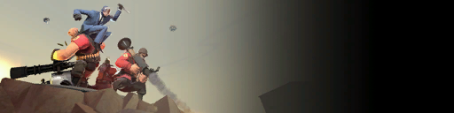
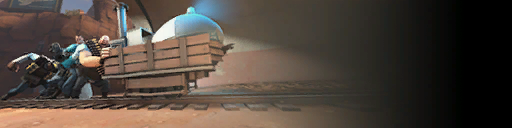

There are 5 core game modes in Team Fortress 2: Capture the Flag, Control Points, Attack/Defend, King of the Hill, and Payload. More details and alternative game modes can be found in the list of game modes from the official Team Fortress Wiki.
Capture the Flag

Capture the Flag (CtF) involves both RED and BLU bases containing their own "flags," known as the Intelligence, with each team trying to capture the enemies' Intelligence while also protecting their own. To capture the Intelligence, a player must make their way to the enemy base and enter the room containing the briefcase. The player must then carry the briefcase to the capture zone in order to capture it successfully. If the player drops the Intelligence intentionally or by dying, it will automatically be returned in 1 minute unless it is picked up. Whoever reaches 3 captures first wins.
Visit https://wiki.teamfortress.com/wiki/Capture_the_Flag for more information on this gamemode.
Control Points

Control Points (CP) is a game mode where both teams fight to obtain several capture points (3 or 5 depending on the map) within the time limit. Points can be captured by standing directly on them, however, if two different teams stand on the point, neither team can take control. The game starts with one point being available for capture, and once that point is captured, the next one unlocks. Capturing a control point extends the time limit.
Visit https://wiki.teamfortress.com/wiki/Control_Point_(game_mode) for more information on this gamemode.
Attack/Defend

Attack/Defend is based on the game mode Control Points. Instead of both teams fighting to obtain a control point, BLU team fights to capture the point while RED team defends it. Just like CP, players must stand on a capture point to obtain it. Once the point is captured, it cannot be retaken by RED. If BLU team is unable to capture all points before time runs out, then RED wins.
Visit https://wiki.teamfortress.com/wiki/Control_Point_(game_mode)#AttackDefend for more information on this gamemode.
King of the Hill

King of the Hill (KOTH) is a game mode involving a single control point for both teams to try to capture. Each team has their own timer that starts to count down when they are capturing the point. When a team loses control of the point, their timer stops while the enemies' timer starts. The first team to have their timer reach 0 wins.
Visit https://wiki.teamfortress.com/wiki/King_of_the_Hill for more information on this gamemode.
Payload

Payload (PL) is similar to Attack/Defend, with BLU team fighting to complete an objective and RED team trying to stop them before the time limit ends. BLU team's job is to push a cart carrying explosives along a track, while RED team prevents the cart from reaching their base. To push the cart, at least one player must remain in the vicinity of the cart. There are also multiple checkpoints along the track, and once a checkpoint is obtained, the time limit increases. If the cart is left alone for 20 seconds, the cart starts to move back to the last checkpoint until it stops. If BLU team fails to obtain the final checkpoint before the timer ends, RED team wins
Visit https://wiki.teamfortress.com/wiki/Payload for more information on this gamemode.